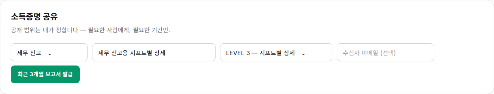
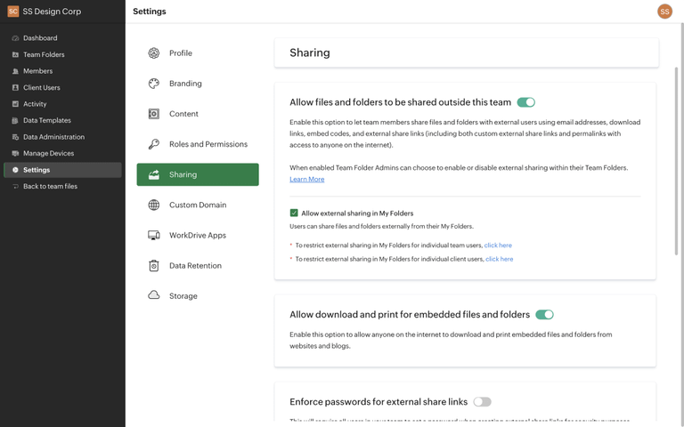
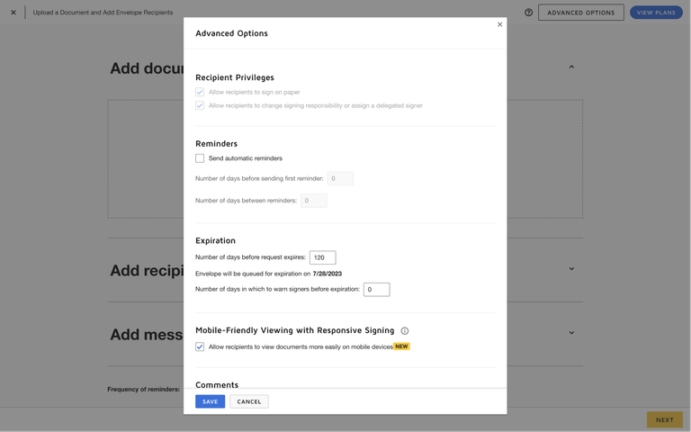
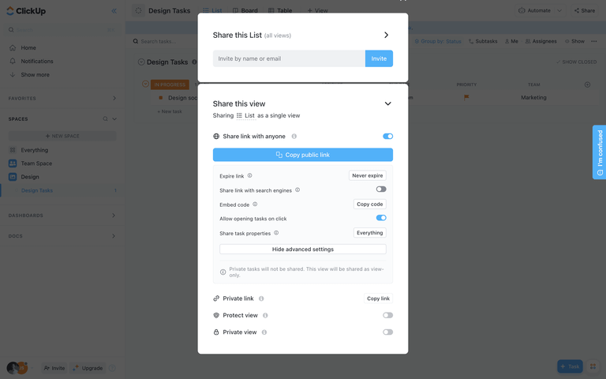
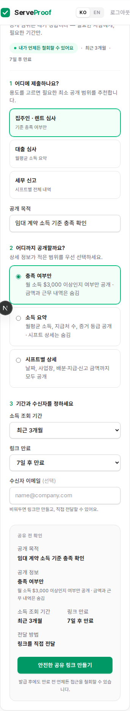

TL;DR
한 줄짜리 설정 폼을 “용도 → 공개 범위 → 기간·수신자 → 공유 전 확인”으로 바꿨다. 사용자는
LEVEL 번호를 해석하지 않아도 실제 노출 정보를 이해하고, 최소 공개 원칙과 만료·철회를 발급
전에 확인할 수 있다.
Current State

기존 화면 — 프리셋·목적·LEVEL·이메일·CTA가 같은 위계에 있어 선택의 의미와 결과를 예측하기
어렵다.
Improvement Ideas
⭐ HIGHEST IMPACT
1. LEVEL을 데이터 공개 범위로 번역
LEVEL 1/2/3을 라디오 카드로 바꾸고, 각 카드에 “무엇을 공개하고 무엇을 숨기는지”를
명시한다. 기술 등급은 내부 값으로 유지하되 사용자에게는 충족 여부·소득 요약·시프트 상세로
보여준다.

Zoho — 설정마다 설명을 붙여 외부 공유와 다운로드의 영향을 구분한다. [Lazyweb]
Why this works: 민감한 금융 데이터 공유에서는 옵션 이름보다 결과가
중요하다. 공개·비공개 항목을 같은 자리에서 설명하면 최소 범위를 고르기 쉬워진다.
┌ 공개 범위 ─────────────────────────┐
│ ○ 충족 여부만 금액·근무내역 숨김 │
│ ● 소득 요약 시프트 상세 숨김 │
│ ○ 시프트 상세 날짜·사업장 포함 │
└────────────────────────────────────┘
2. 목적 프리셋을 추천 시작점으로 사용
렌트·대출·세무를 바로 보이는 카드로 제공하고, 선택 시 공개 목적과 최소 권장 범위를 함께
채운다. 사용자는 프리셋을 쓴 뒤 목적 문구나 범위를 자유롭게 조정할 수 있다.

DocuSign — 수신자 권한과 만료를 작업 맥락 안에서 구체적인 옵션으로 분리한다. [Lazyweb]
Why this works: 프리셋은 선택 수를 줄이되 사용자의 통제권을 없애지
않는다. 렌트 심사에서 불필요한 시프트 상세를 보내는 실수도 예방한다.
어디에 제출하나요?
[집주인·렌트] [대출 심사] [세무 신고]
공개 목적 [임대 계약 소득증명 ]
3. 기간·만료·수신자를 한 묶음으로 명시
고정된 최근 3개월·7일 만료를 화면에 드러내고 선택 가능하게 했다. 수신자 이메일을 비우면
이메일 없이 링크만 생성된다는 보조 문구와 이메일 형식 오류도 즉시 제공한다.

ClickUp — 링크 공유 상태와 만료 옵션을 같은 설정 영역에서 다룬다. [Lazyweb]
웹 근거: Dropbox도 공유 링크의 만료일과 다운로드 허용을 명시적 권한으로 제공하며, 만료 후
링크가 비활성화된다고 설명한다. [Web]
Why this works: 사용자는 데이터 범위뿐 아니라 접근 시간과 전달 대상을
함께 판단해야 실제 공개 범위를 이해할 수 있다.
소득 조회 기간 [최근 3개월⌄] 링크 만료 [7일 후⌄]
수신자 이메일 (선택)
[name@company.com ]
비워두면 링크만 만들고 직접 전달할 수 있어요.
4. 발급 버튼 옆에 최종 요약과 통제권 표시
데스크톱에서는 우측 sticky 요약, 모바일에서는 폼 아래 요약을 보여준다. 목적·공개 정보·조회
기간·만료·전달 방법을 확인한 뒤 “안전한 공유 링크 만들기”를 누른다. 생성 후에는 링크 복사
피드백과 PDF 다운로드를 한 성공 패널에 모은다.
구현 결과 — 입력과 결과 요약이 동시에 보이며 CTA의 결과가 구체적이다.
Why this works: 되돌리기 어려운 공유 행동 직전에 결과를 재확인할 수 있고,
“언제든 철회” 문구가 사용자 통제권을 강화한다.
┌ 공유 전 확인 ──────────────┐
│ 공개 목적 임대 계약 소득증명 │
│ 공개 정보 소득 요약 │
│ 최근 3개월 · 7일 후 만료 │
│ 전달 방법 링크를 직접 전달 │
│ [안전한 공유 링크 만들기] │
└────────────────────────────┘
What's Working
기존의 녹색 브랜드 컬러와 카드 스타일은 신뢰감 있는 핀테크 톤을 잘 유지한다.
목적 프리셋과 공개 LEVEL이라는 도메인 모델은 그대로 재사용할 가치가 있다.
발급 후 QR·PDF·철회가 제공되어 공유 이후 통제 흐름의 기반이 이미 갖춰져 있다.
서버가 발급과 이메일 전송을 한 호출로 처리해 미발급 링크가 먼저 전달되는 상태를 방지한다.
All References

ServeProof 모바일 구현 결과DocuSign — 권한·만료 설정 [Lazyweb]Zoho — 설명형 공유 설정 [Lazyweb]ClickUp — 링크 상태·만료 [Lazyweb]
추가 웹 참고: Dropbox Help의 shared-link expiration/download controls, Plaid Docs의 income
verification 유형 분리. 라이브 캡처 도구가 없어 웹 사례는 텍스트 근거로만 사용했다.